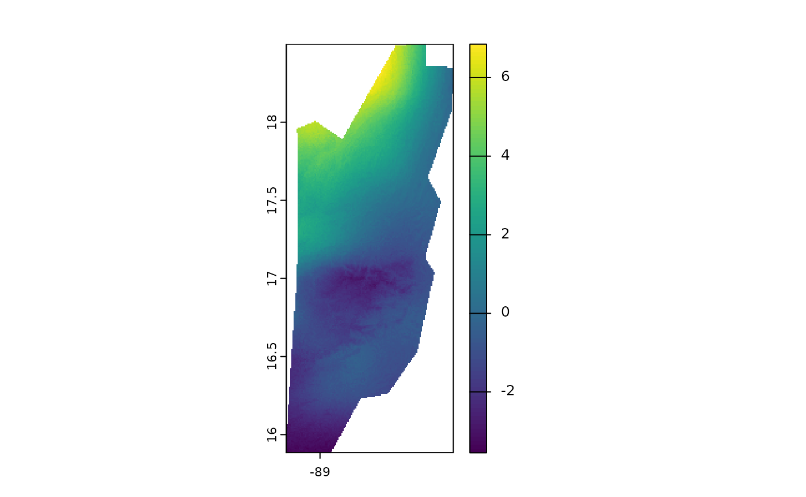

Cálculo de Promedios Temporales con `fastbioclim`
Gonzalo E. Pinilla-Buitrago
11-08-2025
Source:vignettes/tutorial-2-avg-es.Rmd
tutorial-2-avg-es.RmdIntroducción
En el análisis de datos climáticos y ambientales, una tarea fundamental es resumir series de tiempo de datos ráster. Esto nos permite, por ejemplo, calcular “climatologías” o entender cómo han cambiado las condiciones a lo largo del tiempo.
El paquete fastbioclim ofrece dos funciones potentes y
eficientes para esta tarea:
-
calculate_average(): Calcula un promedio climatológico estático. Responde a la pregunta: “¿Cuál es la temperatura máxima promedio para todos los eneros en mi serie de tiempo?”. -
calculate_roll(): Calcula un promedio climatológico móvil (rodante). Responde a la pregunta: “¿Cómo ha cambaido el promedio de enero a lo largo de diferentes ventanas de tiempo?”.
En este tutorial, exploraremos cómo usar ambas funciones utilizando un conjunto de datos de ejemplo de temperatura máxima mensual para Belice.
1. Configuración del Entorno
Antes de empezar, necesitamos cargar los paquetes necesarios.
fastbioclim es el paquete principal, terra se
usa para manejar los datos ráster, y progressr junto con
future nos permitirán ver barras de progreso y ejecutar los
cálculos en paralelo para mayor eficiencia.
# Cargar los paquetes
library(fastbioclim)
library(terra)## terra 1.8.602. Cargar los Datos de Ejemplo
Utilizaremos una serie de tiempo de temperatura máxima
(tmax) para Belice, que viene incluida en un paquete de
datos de ejemplo. Esta serie contiene 39 años de datos mensuales (468
capas en total).
# Obtener la ruta a los archivos de ejemplo
# system.file() busca archivos dentro de un paquete instalado
tmax_paths <- system.file("extdata/belize/", package = "egdata.fastbioclim") |>
list.files(full.names = TRUE)
# Cargar los archivos como un único objeto SpatRaster de terra
tmax_bel <- rast(tmax_paths)
# Verifiquemos la estructura de nuestros datos
# Deberíamos tener 468 capas, que corresponden a 12 meses * 39 años
print(tmax_bel)## class : SpatRaster
## size : 314, 134, 468 (nrow, ncol, nlyr)
## resolution : 0.008333333, 0.008333333 (x, y)
## extent : -89.22514, -88.10847, 15.88319, 18.49986 (xmin, xmax, ymin, ymax)
## coord. ref. : lon/lat WGS 84 (EPSG:4326)
## sources : 1980-01.tif
## 1980-02.tif
## 1980-03.tif
## ... and 465 more sources
## names : 1980-01, 1980-02, 1980-03, 1980-04, 1980-05, 1980-06, ...
## min values : 220, 217, 248, 253, 270, 240, ...
## max values : 276, 278, 317, 316, 334, 299, ...Como podemos ver, tmax_bel es un SpatRaster
con 468 capas, perfecto para nuestros ejemplos.
3. Promedios Climatológicos Estáticos con
calculate_average()
Esta es la forma más común de calcular una climatología. Queremos obtener 12 rásters: uno para el promedio de todos los eneros, uno para todos los febreros, y así sucesivamente.
El argumento clave aquí es index. Es un vector numérico
que le dice a la función cómo agrupar las capas. Para el primer ejemplo,
vamos a usar 30 años de datos mensuales. Para ello creamos un índice que
repite la secuencia 1, 2, ..., 12 treinta veces.
# Usaremos las primeras 360 capas para nuestro ejemplo de 30 años
tmax_subset <- tmax_bel[[1:360]]
# Crear el vector de índice: repite la secuencia 1:12 (meses) 30 veces (años)
index_mensual <- rep(1:12, times = 30)
# Crear un directorio temporal para guardar los resultados
output_path_static <- file.path(tempdir(), "tmax_belize_static_avg")
# Ejecutar la función
# progressr mostrará una barra de progreso si la operación es larga
tmax_avg_static <- calculate_average(
x = tmax_subset,
index = index_mensual,
output_dir = output_path_static,
overwrite = TRUE, # Permitir sobreescribir si el directorio ya existe
output_names = "tmax_avg" # Prefijo para los archivos de salida
)## Using 'auto' method to select workflow...
## Data appears to fit in memory. Selecting 'terra' workflow.
## Calculating averages using terra::tapp...
## Writing final GeoTIFFs...
## Processing complete. Final rasters are in: /tmp/RtmpOKfJiX/tmax_belize_static_avg
# El resultado es un SpatRaster con 12 capas
print(tmax_avg_static)## class : SpatRaster
## size : 314, 134, 12 (nrow, ncol, nlyr)
## resolution : 0.008333333, 0.008333333 (x, y)
## extent : -89.22514, -88.10847, 15.88319, 18.49986 (xmin, xmax, ymin, ymax)
## coord. ref. : lon/lat WGS 84 (EPSG:4326)
## sources : tmax_avg_01.tif
## tmax_avg_02.tif
## tmax_avg_03.tif
## ... and 9 more sources
## names : tmax_avg_01, tmax_avg_02, tmax_avg_03, tmax_avg_04, tmax_avg_05, tmax_avg_06, ...
## min values : 210.1667, 223.0000, 241.6333, 254.8, 258.8667, 251.6000, ...
## max values : 276.4000, 296.5667, 321.5667, 336.9, 339.0667, 320.0333, ...
# Podemos visualizar los 12 promedios mensuales
plot(tmax_avg_static)
¡Listo! tmax_avg_static contiene la climatología de 30
años. La primera capa es el promedio de todos los eneros, la segunda de
todos los febreros, etc.
4. Promedios Climatológicos Móviles con
calculate_roll()
¿Y si queremos ver si el clima está cambiando? En lugar de un único promedio, podemos calcular promedios para ventanas de tiempo que se deslizan. Por ejemplo, el promedio de los años 1-20, luego 2-21, 3-22, y así sucesivamente.
Para esto, usamos calculate_roll(). Sus argumentos clave
son:
-
window_size: El tamaño de la ventana (en ciclos, por ejemplo, años). -
freq: El número de unidades (capas) por ciclo (e.g., 12 para meses en un año).
Ejemplo 1: Ventana de 20 años
Calculemos los promedios mensuales para ventanas móviles de 20 años.
# Crear un directorio de salida para este análisis
output_path_rolling <- file.path(tempdir(), "tmax_belize_rolling_avg")
tmax_roll_avg <- calculate_roll(
x = tmax_bel,
window_size = 20, # Una ventana de 20 ciclos (años)
freq = 12, # 12 unidades (meses) por ciclo
output_dir = output_path_rolling,
output_prefix = "tmax",
overwrite = TRUE
)## Using 'auto' method to select workflow...
## A single window appears to fit in memory. Selecting 'terra' workflow.
## Processing window: Cycle 1 to 20
## Processing window: Cycle 2 to 21
## Processing window: Cycle 3 to 22
## Processing window: Cycle 4 to 23
## Processing window: Cycle 5 to 24
## Processing window: Cycle 6 to 25
## Processing window: Cycle 7 to 26
## Processing window: Cycle 8 to 27
## Processing window: Cycle 9 to 28
## Processing window: Cycle 10 to 29
## Processing window: Cycle 11 to 30
## Processing window: Cycle 12 to 31
## Processing window: Cycle 13 to 32
## Processing window: Cycle 14 to 33
## Processing window: Cycle 15 to 34
## Processing window: Cycle 16 to 35
## Processing window: Cycle 17 to 36
## Processing window: Cycle 18 to 37
## Processing window: Cycle 19 to 38
## Processing window: Cycle 20 to 39
## Writing final GeoTIFFs...
## Processing complete. Final rasters are in: /tmp/RtmpOKfJiX/tmax_belize_rolling_avg
# ¿Cuántas capas hemos creado?
# (39 ciclos - 20 de ventana + 1) * 12 unidades = 20 * 12 = 240 capas
print(tmax_roll_avg)## class : SpatRaster
## size : 314, 134, 240 (nrow, ncol, nlyr)
## resolution : 0.008333333, 0.008333333 (x, y)
## extent : -89.22514, -88.10847, 15.88319, 18.49986 (xmin, xmax, ymin, ymax)
## coord. ref. : lon/lat WGS 84 (EPSG:4326)
## sources : tmax_w01-20_u01.tif
## tmax_w01-20_u02.tif
## tmax_w01-20_u03.tif
## ... and 237 more sources
## names : tmax_~0_u01, tmax_~0_u02, tmax_~0_u03, tmax_~0_u04, tmax_~0_u05, tmax_~0_u06, ...
## min values : 211.6, 223.8, 241.95, 255.55, 259.7, 251.75, ...
## max values : 277.0, 296.0, 319.50, 334.80, 340.1, 319.60, ...
# Veamos los nombres de las primeras 13 capas para entender la salida
# Deberíamos ver los 12 meses para la primera ventana (w1-20) y el primero de la siguiente
names(tmax_roll_avg)[1:13]## [1] "tmax_w01-20_u01" "tmax_w01-20_u02" "tmax_w01-20_u03" "tmax_w01-20_u04"
## [5] "tmax_w01-20_u05" "tmax_w01-20_u06" "tmax_w01-20_u07" "tmax_w01-20_u08"
## [9] "tmax_w01-20_u09" "tmax_w01-20_u10" "tmax_w01-20_u11" "tmax_w01-20_u12"
## [13] "tmax_w02-21_u01"Como se puede ver, los nombres de las capas nos indican la ventana
(w1-20) y el índice de la unidad (u).
Ejemplo 2: Personalizando los Nombres de Salida
La función es muy flexible gracias al argumento
name_template. Podemos definir exactamente cómo queremos
que se llamen nuestros archivos de salida.
# Definir una plantilla de nombres más descriptiva
template_personalizado <- "{prefix}_año_{start_window}-{end_window}_mes_{idx_unit}"
# Directorio de salida para el ejemplo con nombres personalizados
output_path_custom <- file.path(tempdir(), "tmax_belize_custom_names")
tmax_roll_custom <- calculate_roll(
x = tmax_bel,
window_size = 20,
freq = 12,
output_dir = output_path_custom,
output_prefix = "tmax",
name_template = template_personalizado, # Usamos nuestra plantilla
overwrite = TRUE
)## Using 'auto' method to select workflow...
## A single window appears to fit in memory. Selecting 'terra' workflow.
## Processing window: Cycle 1 to 20
## Processing window: Cycle 2 to 21
## Processing window: Cycle 3 to 22
## Processing window: Cycle 4 to 23
## Processing window: Cycle 5 to 24
## Processing window: Cycle 6 to 25
## Processing window: Cycle 7 to 26
## Processing window: Cycle 8 to 27
## Processing window: Cycle 9 to 28
## Processing window: Cycle 10 to 29
## Processing window: Cycle 11 to 30
## Processing window: Cycle 12 to 31
## Processing window: Cycle 13 to 32
## Processing window: Cycle 14 to 33
## Processing window: Cycle 15 to 34
## Processing window: Cycle 16 to 35
## Processing window: Cycle 17 to 36
## Processing window: Cycle 18 to 37
## Processing window: Cycle 19 to 38
## Processing window: Cycle 20 to 39
## Writing final GeoTIFFs...
## Processing complete. Final rasters are in: /tmp/RtmpOKfJiX/tmax_belize_custom_names
# Verifiquemos los nuevos nombres
names(tmax_roll_custom)[1:13]## [1] "tmax_año_01-20_mes_01" "tmax_año_01-20_mes_02" "tmax_año_01-20_mes_03"
## [4] "tmax_año_01-20_mes_04" "tmax_año_01-20_mes_05" "tmax_año_01-20_mes_06"
## [7] "tmax_año_01-20_mes_07" "tmax_año_01-20_mes_08" "tmax_año_01-20_mes_09"
## [10] "tmax_año_01-20_mes_10" "tmax_año_01-20_mes_11" "tmax_año_01-20_mes_12"
## [13] "tmax_año_02-21_mes_01"Analizando los Resultados del Promedio Móvil
Visualizar 240 capas a la vez no es práctico. Un análisis más interesante es, por ejemplo, ver cómo ha cambiado el promedio de un mes específico a lo largo de las ventanas.
Vamos a extraer y visualizar todos los promedios de
enero (idx01).
# Seleccionar todas las capas que corresponden a enero (índice 01)
# Usamos grep() para buscar el patrón "_u01" en los nombres de las capas
indices_enero <- grep("_u01", names(tmax_roll_avg), value = TRUE)
# Crear un subconjunto del SpatRaster solo con los eneros
eneros_moviles <- tmax_roll_avg[[indices_enero]]
# Cambiemos los nombres para que sean más claros (indican la ventana)
names(eneros_moviles) <- paste0("Enero", 1:20)
# Ahora podemos visualizar el cambio entre el primer y último enero
plot(eneros_moviles[[20]] - eneros_moviles[[1]])
Este gráfico nos muestra cómo ha cambiado la temperatura máxima promedio de enero en lso últimos años, permitiéndonos identificar tendencias de calentamiento o enfriamiento. Es importante mencionar que las capas usadas de temperatura máxima están multiplicadas por 10. Por lo cual, existe partes con cambios de hast 0.8 grados centigrados.
Conclusión
El paquete fastbioclim simplifica enormemente el cálculo
de resúmenes temporales en series de tiempo de rásters. * Usa
calculate_average() para climatologías estáticas sobre todo
el período de estudio. * Usa calculate_roll() para analizar
tendencias y cambios a través de ventanas de tiempo móviles.
Ambas funciones están optimizadas para ser eficientes y pueden aprovechar el procesamiento en paralelo para manejar grandes volúmenes de datos.